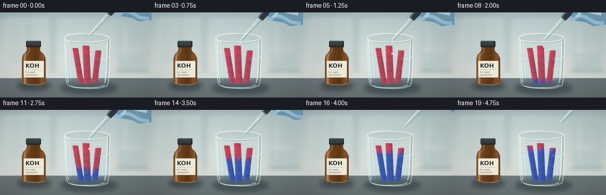
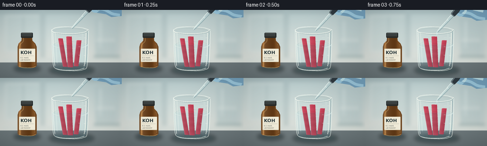

CODING AGENTS AS PIXEL WORLD MODELS
traex/GPT-6.1-Sol · material_0033
点击播放 · 原生 RGB 像素
逐轮保存的候选
回放视频、检查图与代码变化。
每份候选均可单独播放。实际图片检查记录在下方工具轨迹中。
候选 01播放与检查图
点击播放 · 原生 RGB 像素


展开代码变化
--- 上一保存版本
+++ 本次保存版本
@@ -0,0 +1,305 @@
+"""Procedural, supersampled RGB laboratory timelapse; no external imagery."""
+from pathlib import Path
+import math
+import numpy as np
+from PIL import Image, ImageDraw, ImageFont, ImageFilter
+from artifact_io import save
+
+ROOT = Path(__file__).resolve().parent
+W, H, S = 256, 144, 4
+WW, HH = W*S, H*S
+rng = np.random.default_rng(731)
+Y, X = np.mgrid[0:HH, 0:WW].astype(np.float32) / S
+texture = rng.normal(0, 1, (HH, WW)).astype(np.float32)
+
+
+def xy(p):
+ return tuple(round(float(v)*S) for v in p)
+
+
+def mask_poly(points):
+ m = Image.new('L', (WW, HH))
+ ImageDraw.Draw(m).polygon([xy(p) for p in points], fill=255)
+ return m
+
+
+def mask_ellipse(box):
+ m = Image.new('L', (WW, HH))
+ ImageDraw.Draw(m).ellipse(xy(box), fill=255)
+ return m
+
+
+def composite_field(im, field, mask, alpha=1.):
+ a = np.asarray(mask, dtype=np.float32)[..., None]/255*alpha
+ base = np.asarray(im, dtype=np.float32)
+ col = np.broadcast_to(np.asarray(field, dtype=np.float32), base.shape)
+ return Image.fromarray(np.clip(base*(1-a)+col*a, 0, 255).astype('uint8'))
+
+
+def overlay(im):
+ return Image.new('RGBA', im.size)
+
+
+def line(d, pts, fill, width=1):
+ d.line([xy(p) for p in pts], fill=fill, width=max(1, round(width*S)), joint='curve')
+
+
+def ellipse(d, box, fill=None, outline=None, width=1):
+ d.ellipse(xy(box), fill=fill, outline=outline, width=max(1, round(width*S)))
+
+
+def rect(d, box, fill, radius=0, outline=None, width=1):
+ d.rounded_rectangle(xy(box), radius=round(radius*S), fill=fill, outline=outline, width=max(1,round(width*S)))
+
+
+def font(size, bold=False):
+ return ImageFont.truetype('/usr/share/fonts/truetype/dejavu/DejaVuSans'+('-Bold' if bold else '')+'.ttf', round(size*S))
+
+
+def text(d, loc, word, size, fill, bold=False):
+ d.text(xy(loc), word, font=font(size,bold), fill=fill)
+
+
+def curve(d, pts, fill, width=1):
+ # Catmull-Rom curves, sampled to avoid any external renderer.
+ q = [pts[0]]+list(pts)+[pts[-1]]
+ path = []
+ for j in range(1,len(q)-2):
+ p0,p1,p2,p3 = [np.array(v) for v in q[j-1:j+3]]
+ for u in np.linspace(0,1,16,endpoint=False):
+ v=.5*((2*p1)+(-p0+p2)*u+(2*p0-5*p1+4*p2-p3)*u*u+(-p0+3*p1-3*p2+p3)*u*u*u)
+ path.append(tuple(v))
+ path.append(pts[-1])
+ line(d,path,fill,width)
+
+
+# Soft, intentionally defocused laboratory background.
+base = np.zeros((HH,WW,3),np.float32)
+for c,(top,bottom) in enumerate([(174,217),(194,220),(195,214)]):
+ base[...,c]=top+(bottom-top)*np.clip(Y/115,0,1)
+light = 12*np.exp(-((X-105)/95)**2-((Y-40)/90)**2)
+base += light[...,None]
+base += texture[...,None]*.36
+bg = Image.fromarray(np.clip(base,0,255).astype('uint8')).convert('RGBA')
+l = overlay(bg); d = ImageDraw.Draw(l)
+# Rear wall, lab cabinetry and distant vessels.
+rect(d,(0,0,257,8),(145,164,168,100))
+rect(d,(10,10,92,89),(212,223,221,140),3)
+rect(d,(14,14,88,85),(194,211,210,105),2)
+line(d,[(49,15),(49,84)],(123,151,155,100),1.7)
+rect(d,(84,3,95,105),(156,177,179,95))
+rect(d,(199,18,251,94),(174,195,197,115),2)
+line(d,[(211,23),(211,80)],(222,233,231,140),3)
+for j in range(5):
+ x=204+j*8
+ rect(d,(x,64,x+3,102),(144,176,180,100),1)
+ ellipse(d,(x-.2,61,x+3.2,67),(233,240,237,120))
+rect(d,(197,96,252,104),(117,148,151,130),1)
+rect(d,(4,101,256,112),(208,218,214,120),1)
+bg=Image.alpha_composite(bg,l).filter(ImageFilter.GaussianBlur(3.5*S)).convert('RGB')
+# Charcoal gray stone bench: diffuse directional light and faint grain.
+bench=mask_poly([(0,111),(256,111),(256,144),(0,144)])
+bf=np.zeros_like(base)
+for c,v in enumerate([106,117,120]):
+ bf[...,c]=v+8*np.exp(-((X-110)/100)**2)-(Y-111)*.30+texture*.55
+bg=composite_field(bg,bf,bench)
+# Narrow gently blurred back edge.
+l=overlay(bg); d=ImageDraw.Draw(l)
+line(d,[(0,111),(256,111)],(219,227,223,85),.7)
+bg=Image.alpha_composite(bg.convert('RGBA'),l).convert('RGB')
+
+# Soft cast shadows ground each piece of glassware.
+shadow=Image.new('RGBA',(WW,HH)); d=ImageDraw.Draw(shadow)
+ellipse(d,(29,116,85,132),(18,35,38,120))
+ellipse(d,(103,117,198,138),(21,43,46,115))
+shadow=shadow.filter(ImageFilter.GaussianBlur(4*S))
+bg=Image.alpha_composite(bg.convert('RGBA'),shadow).convert('RGB')
+
+# Amber reagent bottle, fixed on the left, reads KOH clearly.
+bottle_pts=[(40,121),(37,118),(37,78),(39,71),(45,65),(46,55),(67,55),(68,65),(74,71),(77,78),(77,118),(73,122)]
+bm=mask_poly(bottle_pts)
+bfield=np.zeros_like(base)
+f=(X-37)/40
+shine = 56*np.exp(-((f-.12)/.055)**2)+23*np.exp(-((f-.82)/.1)**2)
+for c,v in enumerate([108,69,34]):
+ bfield[...,c]=v + shine*(1 if c==0 else .73 if c==1 else .40) + 12*np.cos(f*5.1) + texture*.6
+bg=composite_field(bg,bfield,bm)
+l=overlay(bg); d=ImageDraw.Draw(l)
+curve(d,[(42,118),(41,83),(43,73),(49,66),(49,58)],(240,196,121,93),1.5)
+curve(d,[(71,72),(73,79),(73,116)],(213,166,103,110),.8)
+curve(d,[(40,119),(49,122),(67,122),(75,119)],(233,183,105,160),1.0)
+rect(d,(44,48,69,59),(36,42,43,255),2)
+rect(d,(45,48,67.5,50.5),(73,79,77,255),1)
+for x in np.arange(46,68,2):
+ line(d,[(x,51),(x,57)],(91,96,91,160),.55)
+# Off-white curved label with understated typography.
+rect(d,(40,82,74,110),(235,230,208,255),.9)
+rect(d,(41,83,73,108.5),(244,239,220,255),.5)
+text(d,(43,84.2),'KOH',9.7,(45,59,62,255),True)
+line(d,[(43,97),(71,97)],(109,126,120,220),.35)
+text(d,(43,99),'0.1 mol/L',3.7,(77,88,85,255))
+text(d,(43,104),'LAB REAGENT',3.1,(91,95,85,255))
+bg=Image.alpha_composite(bg.convert('RGBA'),l).convert('RGB')
+
+# Glass cylinder body and liquid masks.
+glass_pts=[(108,43),(110,104),(112,119),(116,125),(128,129),(165,129),(180,125),(184,117),(186,43)]
+gm=mask_poly(glass_pts)
+water_pts=[(110,73),(113,120),(118,124),(132,126),(166,126),(178,123),(182,118),(185,73)]
+wm=mask_poly(water_pts)
+
+
+def paper(im, i, progress):
+ # Three individual strips with ragged paper fibers, submerged in the beaker.
+ specs=[(127,60,137,120,9.5),(145,56,148,121,11.5),(166,64,160,119,9.8)]
+ xt,yt,xb,yb,w=specs[i]
+ frac=np.clip((Y-yt)/(yb-yt),0,1)
+ centre=xt+(xb-xt)*frac+ .32*np.sin(frac*5+i)
+ top=[(xt-w/2,yt+.4),(xt-w/2+2.5,yt-.2),(xt+w/2,yt+.3)]
+ pts=top+[(xb+w/2-.2,yb-.2),(xb+w/2-2,yb+.4),(xb-w/2,yb)]
+ pm=mask_poly(pts)
+ # Uneven alkaline wetting front moves bottom-to-top during the accelerated shot.
+ start=.17+i*.035
+ p=np.clip((progress-start)/(1-start),0,1)
+ front=yb+8-(yb-72+13)*p
+ uneven=2*np.sin((X-centre)*.83+i*1.7)+1.8*np.sin(Y*.26+X*.5+i)
+ activation=1/(1+np.exp(np.clip((front-Y+uneven)/1.65,-30,30)))
+ activation *= np.clip(p*8,0,1)
+ # Deep neutral blue on base contact; magenta/purple transitional reaction band.
+ red=np.array([190,63,84],np.float32)
+ purple=np.array([124,66,153],np.float32)
+ blue=np.array([50,83,181],np.float32)
+ t=activation[...,None]
+ c=red*(1-np.clip(t*2,0,1))+purple*np.clip(t*2,0,1)
+ c=c*(1-np.clip((t-.5)*2,0,1))+blue*np.clip((t-.5)*2,0,1)
+ side=(X-centre)/(w/2)
+ shading=5-9*side+3*np.sin(Y*.48+i)+texture*1.9
+ # Fibrous texture and a subtly darker soaked section.
+ fiber=np.sin(X*21+i)*np.sin(Y*4.8)*1.0
+ c+=shading[...,None]+fiber[...,None]
+ c*=np.where(Y[...,None]>74,.91,1.)
+ im=composite_field(im,c,pm)
+ l=overlay(im); d=ImageDraw.Draw(l)
+ curve(d,[(xt-w/2+.45,yt+.8),(xt+(xb-xt)*.5-w/2+.4,(yt+yb)*.5),(xb-w/2+.4,yb-.8)],(246,201,206,70),.45)
+ line(d,[(xt-w/2,yt+.25),(xt+w/2,yt+.25)],(244,178,185,180),.35)
+ return Image.alpha_composite(im.convert('RGBA'),l).convert('RGB')
+
+
+def dropper(im, frame):
+ # Pipette and partial nitrile-gloved fingers enter from upper-right.
+ approach=min(frame/3,1)
+ retreat=np.clip((frame-13)/4,0,1)
+ tip=np.array([151+retreat*28,47+(1-approach)*-8-retreat*25])
+ axis=np.array([.67,-.742]); perp=np.array([.742,.67])
+ def p(u,v=0):
+ return tuple(tip+axis*u+perp*v)
+ l=overlay(im); d=ImageDraw.Draw(l)
+ # Glove behind the dropper: cropped palm and pinching fingertips.
+ # Position follows the pipette's withdrawal coherently.
+ shift=tip-np.array([151,47])
+ def g(points): return [tuple(np.array(q)+shift) for q in points]
+ pts=g([(195,-12),(257,-12),(263,20),(234,23),(223,17),(204,14),(196,9),(190,4),(190,-3)])
+ d.polygon([xy(z) for z in pts],fill=(113,157,184,255))
+ curve(d,g([(252,19),(236,16),(221,8),(209,6),(202,11),(195,9),(190,4),(191,-2),(198,-5)]),(151,194,214,255),6)
+ curve(d,g([(248,3),(230,-1),(219,-4),(212,-2),(210,4),(205,8)]),(184,218,226,230),5)
+ curve(d,g([(221,13),(213,11),(205,9)]),(76,124,157,180),.8)
+ curve(d,g([(235,11),(232,6),(226,2)]),(70,120,151,120),.65)
+ # Rubber bulb joined to the glass barrel.
+ tube=[p(0,-.7),p(0,.7),p(9,2.1),p(51,3.0),p(53,-3),p(9,-2.1)]
+ d.polygon([xy(z) for z in tube],fill=(193,218,220,128))
+ curve(d,[p(0,-.6),p(10,-1.7),p(49,-2.7)],(242,252,247,235),.9)
+ curve(d,[p(0,.75),p(11,1.85),p(50,2.9)],(91,131,138,165),.7)
+ # The small meniscus inside the filled dropper.
+ line(d,[p(7,-.5),p(36,-.7)],(221,239,233,160),1.0)
+ line(d,[p(34,-1.8),p(34,1.8)],(229,248,243,220),.65)
+ # Bulb is an elongated, smoothly contoured dark rubber shape.
+ bulb=[p(48,-3.8),p(50,-5.0),p(62,-5.7),p(70,-4.3),p(73,-1.5),p(73,1.5),p(70,4.3),p(62,5.7),p(50,5),p(48,3.8)]
+ d.polygon([xy(z) for z in bulb],fill=(47,57,63,255))
+ curve(d,[p(49,-3.4),p(59,-4.2),p(68,-3.0),p(71,-1.2)],(108,124,131,255),1.8)
+ line(d,[p(49,-3.8),p(49,3.8)],(132,151,157,255),.7)
+ # A sequence of separate clear drops, not a continuous colored pour.
+ if 3<=frame<=12:
+ phase=((frame-3)*.47)%1
+ dy=tip[1]+3+phase*21
+ dx=tip[0]-.5+phase*.1
+ ellipse(d,(dx-1.25,dy-2,dx+1.25,dy+1.85),(191,221,224,205), (238,252,249,225),.4)
+ line(d,[(dx-.45,dy-1.3),(dx-.6,dy+.2)],(255,255,250,240),.35)
+ ellipse(d,(tip[0]-.8,tip[1]-.2,tip[0]+.8,tip[1]+2.0),(214,238,235,220))
+ return Image.alpha_composite(im.convert('RGBA'),l).convert('RGB')
+
+
+def render(frame):
+ im=bg.copy()
+ p=np.clip((frame-3)/14,0,1)
+ # Transparent glass rear surface: mild refraction/brightening, never opaque.
+ glassfield=np.asarray(im,dtype=np.float32)*.91+np.array([17,23,23])
+ im=composite_field(im,glassfield,gm,.52)
+ # Far rim, seen behind the contents.
+ l=overlay(im); d=ImageDraw.Draw(l)
+ ellipse(d,(107.5,35.5,186.7,51),(105,138,143,18),(233,246,239,175),.85)
+ curve(d,[(109,42),(119,36.7),(144,35.6),(170,37.3),(184.5,42)],(247,251,243,220),.95)
+ curve(d,[(112,44),(130,39),(157,39),(182,44)],(97,128,133,60),.45)
+ im=Image.alpha_composite(im.convert('RGBA'),l).convert('RGB')
+ # Crystal-clear water, soft cyan refraction at the glass base.
+ wf=np.asarray(im,dtype=np.float32)*np.array([.93,.975,1.00])+np.array([4,6,7])
+ im=composite_field(im,wf,wm,.56)
+ l=overlay(im); d=ImageDraw.Draw(l)
+ ellipse(d,(110,66.7,185,81.6),(193,215,210,45),(227,241,232,135),.65)
+ curve(d,[(111,73),(124,67.9),(146,66.8),(171,68.4),(184,73)],(118,162,167,130),.5)
+ # Local ripples and subtle surface disturbance whenever a drop lands.
+ if 4<=frame<=15:
+ rad=4+((frame-4)*3.7)%14
+ alpha=round(110*(1-(rad-4)/18))
+ ellipse(d,(151-rad,73-rad*.20,151+rad,73+rad*.20),None,(232,247,242,alpha),.48)
+ ellipse(d,(148-rad*.62,73.5-rad*.12,148+rad*.62,73.5+rad*.12),None,(124,170,174,alpha//2),.35)
+ im=Image.alpha_composite(im.convert('RGBA'),l).convert('RGB')
+ # Paper backs cast very soft shadows in the water.
+ l=overlay(im); d=ImageDraw.Draw(l)
+ for x in [137,148,160]:
+ ellipse(d,(x-5,119,x+9,125),(65,81,99,40))
+ l=l.filter(ImageFilter.GaussianBlur(1.0*S))
+ im=Image.alpha_composite(im.convert('RGBA'),l).convert('RGB')
+ for i in range(3): im=paper(im,i,p)
+ # Foreground liquid slightly reduces submerged paper saturation.
+ im=composite_field(im,np.array([178,202,204]),wm,.072)
+ # Very faint reagent advection: transparent swirls rather than colored liquid.
+ if 5<=frame<=15:
+ l=overlay(im); d=ImageDraw.Draw(l)
+ u=(frame-5)/10
+ curve(d,[(151,76),(150-4*u,83),(155+3*u,91),(150+5*u,103),(153,117)],(229,244,239,32),1.0)
+ im=Image.alpha_composite(im.convert('RGBA'),l).convert('RGB')
+ # Curved glass edges, polished base, reflection bands, and tiny graduations.
+ l=overlay(im); d=ImageDraw.Draw(l)
+ curve(d,[(108.3,43),(109.3,72),(110.6,103),(112.4,118),(117,124),(130,127.5),(159,128.6),(176,125.8),(183,118),(185.5,76),(186,43)],(242,250,243,155),1.15)
+ curve(d,[(110.8,48),(112,78),(113.5,103),(115.2,118)],(252,254,246,220),1.0)
+ curve(d,[(183.5,47),(182.8,75),(181.8,105),(178.8,118)],(87,124,134,170),.75)
+ curve(d,[(180.8,48),(180.5,66),(178.9,105),(176.7,119)],(248,253,243,200),1.35)
+ curve(d,[(116,121),(126,125),(146,126.4),(166,125.5),(179,120.5)],(74,109,119,145),1.05)
+ curve(d,[(117,124),(134,127),(162,126.8),(177,122.8)],(250,254,245,210),.9)
+ # Long soft reflections of laboratory overhead lighting.
+ d.polygon([xy(z) for z in [(115,50),(117.1,49),(121,113),(118.8,112)]],fill=(249,255,247,53))
+ d.polygon([xy(z) for z in [(172,49),(175.4,50),(173.6,111),(171.7,116)]],fill=(235,251,246,26))
+ for y,lab in [(59,'100'),(78,'75'),(96,'50'),(113,'25')]:
+ line(d,[(176,y),(181,y)],(241,251,242,160),.65)
+ text(d,(164.8,y-2.3),lab,3.3,(222,239,229,170))
+ if y<110: line(d,[(178,y+9),(181,y+9)],(224,242,232,150),.45)
+ # Front opening rim crosses the glass, giving visible thickness.
+ curve(d,[(108,43),(115,48),(136,51),(161,50.7),(179,47.7),(186,43)],(83,119,126,160),.7)
+ curve(d,[(108,41.8),(113,47),(132,49.7),(156,50),(177,47),(186,41.8)],(253,254,245,228),1.15)
+ # Liquid meniscus is visible at both side walls, in front of the strips.
+ curve(d,[(110.6,72.8),(115,77),(123,79)],(232,246,238,162),.6)
+ curve(d,[(173,79),(181,77),(184,72.8)],(235,248,240,180),.65)
+ im=Image.alpha_composite(im.convert('RGBA'),l).convert('RGB')
+ im=dropper(im,frame)
+ # Optical vignette, consistent fine film grain and gentle highlight response.
+ a=np.asarray(im,dtype=np.float32)
+ vign=1-.09*((X-132)/167)**2-.075*((Y-71)/102)**2
+ a=a*vign[...,None]
+ a+=texture[...,None]*.3
+ im=Image.fromarray(np.clip(a,0,255).astype('uint8'))
+ return np.asarray(im.resize((W,H),Image.Resampling.LANCZOS))
+
+
+if __name__=='__main__':
+ frames=np.stack([render(i) for i in range(20)]).astype(np.uint8)
+ save(frames,ROOT)
+ print('Saved', frames.shape, frames.dtype, 'RGB frames at 4 fps.')
可观测工具轨迹
实际执行的命令与返回图片。
命令 1exit 0
/bin/bash -lc "ls -la && cat prompt.txt && printf '\\n---RULES---\\n' && cat GENERATION_RULES.md && printf '\\n---SPEC---\\n' && cat task_spec.json"
命令 2exit 0
/bin/bash -lc "cat artifact_io.py && printf '\\n---\\n' && cat player_template.html"
命令 3exit 0
/bin/bash -lc 'fc-list | head -10'
命令 4exit 0
/bin/bash -lc "cat > generate.py <<'PY'
\"\"\"Procedural, supersampled RGB laboratory timelapse; no external imagery.\"\"\"
from pathlib import Path
import math
import numpy as np
from PIL import Image, ImageDraw, ImageFont, ImageFilter
from artifact_io import save
ROOT = Path(__file__).resolve().parent
W, H, S = 256, 144, 4
WW, HH = W*S, H*S
rng = np.random.default_rng(731)
Y, X = np.mgrid[0:HH, 0:WW].astype(np.float32) / S
texture = rng.normal(0, 1, (HH, WW)).astype(np.float32)
def xy(p):
return tuple(round(float(v)*S) for v in p)
def mask_poly(points):
m = Image.new('L', (WW, HH))
ImageDraw.Draw(m).polygon([xy(p) for p in points], fill=255)
return m
def mask_ellipse(box):
m = Image.new('L', (WW, HH))
ImageDraw.Draw(m).ellipse(xy(box), fill=255)
return m
def composite_field(im, field, mask, alpha=1.):
a = np.asarray(mask, dtype=np.float32)[..., None]/255*alpha
base = np.asarray(im, dtype=np.float32)
col = np.broadcast_to(np.asarray(field, dtype=np.float32), base.shape)
return Image.fromarray(np.clip(base*(1-a)+col*a, 0, 255).astype('uint8'))
def overlay(im):
return Image.new('RGBA', im.size)
def line(d, pts, fill, width=1):
d.line([xy(p) for p in pts], fill=fill, width=max(1, round(width*S)), joint='curve')
def ellipse(d, box, fill=None, outline=None, width=1):
d.ellipse(xy(box), fill=fill, outline=outline, width=max(1, round(width*S)))
def rect(d, box, fill, radius=0, outline=None, width=1):
d.rounded_rectangle(xy(box), radius=round(radius*S), fill=fill, outline=outline, width=max(1,round(width*S)))
def font(size, bold=False):
return ImageFont.truetype('/usr/share/fonts/truetype/dejavu/DejaVuSans'+('-Bold' if bold else '')+'.ttf', round(size*S))
def text(d, loc, word, size, fill, bold=False):
d.text(xy(loc), word, font=font(size,bold), fill=fill)
def curve(d, pts, fill, width=1):
# Catmull-Rom curves, sampled to avoid any external renderer.
q = [pts[0]]+list(pts)+[pts[-1]]
path = []
for j in range(1,len(q)-2):
p0,p1,p2,p3 = [np.array(v) for v in q[j-1:j+3]]
for u in np.linspace(0,1,16,endpoint=False):
v=.5*((2*p1)+(-p0+p2)*u+(2*p0-5*p1+4*p2-p3)*u*u+(-p0+3*p1-3*p2+p3)*u*u*u)
path.append(tuple(v))
path.append(pts[-1])
line(d,path,fill,width)
# Soft, intentionally defocused laboratory background.
base = np.zeros((HH,WW,3),np.float32)
for c,(top,bottom) in enumerate([(174,217),(194,220),(195,214)]):
base[...,c]=top+(bottom-top)*np.clip(Y/115,0,1)
light = 12*np.exp(-((X-105)/95)**2-((Y-40)/90)**2)
base += light[...,None]
base += texture[...,None]*.36
bg = Image.fromarray(np.clip(base,0,255).astype('uint8')).convert('RGBA')
l = overlay(bg); d = ImageDraw.Draw(l)
# Rear wall, lab cabinetry and distant vessels.
rect(d,(0,0,257,8),(145,164,168,100))
rect(d,(10,10,92,89),(212,223,221,140),3)
rect(d,(14,14,88,85),(194,211,210,105),2)
line(d,[(49,15),(49,84)],(123,151,155,100),1.7)
rect(d,(84,3,95,105),(156,177,179,95))
rect(d,(199,18,251,94),(174,195,197,115),2)
line(d,[(211,23),(211,80)],(222,233,231,140),3)
for j in range(5):
x=204+j*8
rect(d,(x,64,x+3,102),(144,176,180,100),1)
ellipse(d,(x-.2,61,x+3.2,67),(233,240,237,120))
rect(d,(197,96,252,104),(117,148,151,130),1)
rect(d,(4,101,256,112),(208,218,214,120),1)
bg=Image.alpha_composite(bg,l).filter(ImageFilter.GaussianBlur(3.5*S)).convert('RGB')
# Charcoal gray stone bench: diffuse directional light and faint grain.
bench=mask_poly([(0,111),(256,111),(256,144),(0,144)])
bf=np.zeros_like(base)
for c,v in enumerate([106,117,120]):
bf[...,c]=v+8*np.exp(-((X-110)/100)**2)-(Y-111)*.30+texture*.55
bg=composite_field(bg,bf,bench)
# Narrow gently blurred back edge.
l=overlay(bg); d=ImageDraw.Draw(l)
line(d,[(0,111),(256,111)],(219,227,223,85),.7)
bg=Image.alpha_composite(bg.convert('RGBA'),l).convert('RGB')
# Soft cast shadows ground each piece of glassware.
shadow=Image.new('RGBA',(WW,HH)); d=ImageDraw.Draw(shadow)
ellipse(d,(29,116,85,132),(18,35,38,120))
ellipse(d,(103,117,198,138),(21,43,46,115))
shadow=shadow.filter(ImageFilter.GaussianBlur(4*S))
bg=Image.alpha_composite(bg.convert('RGBA'),shadow).convert('RGB')
# Amber reagent bottle, fixed on the left, reads KOH clearly.
bottle_pts=[(40,121),(37,118),(37,78),(39,71),(45,65),(46,55),(67,55),(68,65),(74,71),(77,78),(77,118),(73,122)]
bm=mask_poly(bottle_pts)
bfield=np.zeros_like(base)
f=(X-37)/40
shine = 56*np.exp(-((f-.12)/.055)**2)+23*np.exp(-((f-.82)/.1)**2)
for c,v in enumerate([108,69,34]):
bfield[...,c]=v + shine*(1 if c==0 else .73 if c==1 else .40) + 12*np.cos(f*5.1) + texture*.6
bg=composite_field(bg,bfield,bm)
l=overlay(bg); d=ImageDraw.Draw(l)
curve(d,[(42,118),(41,83),(43,73),(49,66),(49,58)],(240,196,121,93),1.5)
curve(d,[(71,72),(73,79),(73,116)],(213,166,103,110),.8)
curve(d,[(40,119),(49,122),(67,122),(75,119)],(233,183,105,160),1.0)
rect(d,(44,48,69,59),(36,42,43,255),2)
rect(d,(45,48,67.5,50.5),(73,79,77,255),1)
for x in np.arange(46,68,2):
line(d,[(x,51),(x,57)],(91,96,91,160),.55)
# Off-white curved label with understated typography.
rect(d,(40,82,74,110),(235,230,208,255),.9)
rect(d,(41,83,73,108.5),(244,239,220,255),.5)
text(d,(43,84.2),'KOH',9.7,(45,59,62,255),True)
line(d,[(43,97),(71,97)],(109,126,120,220),.35)
text(d,(43,99),'0.1 mol/L',3.7,(77,88,85,255))
text(d,(43,104),'LAB REAGENT',3.1,(91,95,85,255))
bg=Image.alpha_composite(bg.convert('RGBA'),l).convert('RGB')
# Glass cylinder body and liquid masks.
glass_pts=[(108,43),(110,104),(112,119),(116,125),(128,129),(165,129),(180,125),(184,117),(186,43)]
gm=mask_poly(glass_pts)
water_pts=[(110,73),(113,120),(118,124),(132,126),(166,126),(178,123),(182,118),(185,73)]
wm=mask_poly(water_pts)
def paper(im, i, progress):
# Three individual strips with ragged paper fibers, submerged in the beaker.
specs=[(127,60,137,120,9.5),(145,56,148,121,11.5),(166,64,160,119,9.8)]
xt,yt,xb,yb,w=specs[i]
frac=np.clip((Y-yt)/(yb-yt),0,1)
centre=xt+(xb-xt)*frac+ .32*np.sin(frac*5+i)
top=[(xt-w/2,yt+.4),(xt-w/2+2.5,yt-.2),(xt+w/2,yt+.3)]
pts=top+[(xb+w/2-.2,yb-.2),(xb+w/2-2,yb+.4),(xb-w/2,yb)]
pm=mask_poly(pts)
# Uneven alkaline wetting front moves bottom-to-top during the accelerated shot.
start=.17+i*.035
p=np.clip((progress-start)/(1-start),0,1)
front=yb+8-(yb-72+13)*p
uneven=2*np.sin((X-centre)*.83+i*1.7)+1.8*np.sin(Y*.26+X*.5+i)
activation=1/(1+np.exp(np.clip((front-Y+uneven)/1.65,-30,30)))
activation *= np.clip(p*8,0,1)
# Deep neutral blue on base contact; magenta/purple transitional reaction band.
red=np.array([190,63,84],np.float32)
purple=np.array([124,66,153],np.float32)
blue=np.array([50,83,181],np.float32)
t=activation[...,None]
c=red*(1-np.clip(t*2,0,1))+purple*np.clip(t*2,0,1)
c=c*(1-np.clip((t-.5)*2,0,1))+blue*np.clip((t-.5)*2,0,1)
side=(X-centre)/(w/2)
shading=5-9*side+3*np.sin(Y*.48+i)+texture*1.9
# Fibrous texture and a subtly darker soaked section.
fiber=np.sin(X*21+i)*np.sin(Y*4.8)*1.0
c+=shading[...,None]+fiber[...,None]
c*=np.where(Y[...,None]>74,.91,1.)
im=composite_field(im,c,pm)
l=overlay(im); d=ImageDraw.Draw(l)
curve(d,[(xt-w/2+.45,yt+.8),(xt+(xb-xt)*.5-w/2+.4,(yt+yb)*.5),(xb-w/2+.4,yb-.8)],(246,201,206,70),.45)
line(d,[(xt-w/2,yt+.25),(xt+w/2,yt+.25)],(244,178,185,180),.35)
return Image.alpha_composite(im.convert('RGBA'),l).convert('RGB')
def dropper(im, frame):
# Pipette and partial nitrile-gloved fingers enter from upper-right.
approach=min(frame/3,1)
retreat=np.clip((frame-13)/4,0,1)
tip=np.array([151+retreat*28,47+(1-approach)*-8-retreat*25])
axis=np.array([.67,-.742]); perp=np.array([.742,.67])
def p(u,v=0):
return tuple(tip+axis*u+perp*v)
l=overlay(im); d=ImageDraw.Draw(l)
# Glove behind the dropper: cropped palm and pinching fingertips.
# Position follows the pipette's withdrawal coherently.
shift=tip-np.array([151,47])
def g(points): return [tuple(np.array(q)+shift) for q in points]
pts=g([(195,-12),(257,-12),(263,20),(234,23),(223,17),(204,14),(196,9),(190,4),(190,-3)])
d.polygon([xy(z) for z in pts],fill=(113,157,184,255))
curve(d,g([(252,19),(236,16),(221,8),(209,6),(202,11),(195,9),(190,4),(191,-2),(198,-5)]),(151,194,214,255),6)
curve(d,g([(248,3),(230,-1),(219,-4),(212,-2),(210,4),(205,8)]),(184,218,226,230),5)
curve(d,g([(221,13),(213,11),(205,9)]),(76,124,157,180),.8)
curve(d,g([(235,11),(232,6),(226,2)]),(70,120,151,120),.65)
# Rubber bulb joined to the glass barrel.
tube=[p(0,-.7),p(0,.7),p(9,2.1),p(51,3.0),p(53,-3),p(9,-2.1)]
d.polygon([xy(z) for z in tube],fill=(193,218,220,128))
curve(d,[p(0,-.6),p(10,-1.7),p(49,-2.7)],(242,252,247,235),.9)
curve(d,[p(0,.75),p(11,1.85),p(50,2.9)],(91,131,138,165),.7)
# The small meniscus inside the filled dropper.
line(d,[p(7,-.5),p(36,-.7)],(221,239,233,160),1.0)
line(d,[p(34,-1.8),p(34,1.8)],(229,248,243,220),.65)
# Bulb is an elongated, smoothly contoured dark rubber shape.
bulb=[p(48,-3.8),p(50,-5.0),p(62,-5.7),p(70,-4.3),p(73,-1.5),p(73,1.5),p(70,4.3),p(62,5.7),p(50,5),p(48,3.8)]
d.polygon([xy(z) for z in bulb],fill=(47,57,63,255))
curve(d,[p(49,-3.4),p(59,-4.2),p(68,-3.0),p(71,-1.2)],(108,124,131,255),1.8)
line(d,[p(49,-3.8),p(49,3.8)],(132,151,157,255),.7)
# A sequence of separate clear drops, not a continuous colored pour.
if 3<=frame<=12:
phase=((frame-3)*.47)%1
dy=tip[1]+3+phase*21
dx=tip[0]-.5+phase*.1
ellipse(d,(dx-1.25,dy-2,dx+1.25,dy+1.85),(191,221,224,205), (238,252,249,225),.4)
line(d,[(dx-.45,dy-1.3),(dx-.6,dy+.2)],(255,255,250,240),.35)
ellipse(d,(tip[0]-.8,tip[1]-.2,tip[0]+.8,tip[1]+2.0),(214,238,235,220))
return Image.alpha_composite(im.convert('RGBA'),l).convert('RGB')
def render(frame):
im=bg.copy()
p=np.clip((frame-3)/14,0,1)
# Transparent glass rear surface: mild refraction/brightening, never opaque.
glassfield=np.asarray(im,dtype=np.float32)*.91+np.array([17,23,23])
im=composite_field(im,glassfield,gm,.52)
# Far rim, seen behind the contents.
l=overlay(im); d=ImageDraw.Draw(l)
ellipse(d,(107.5,35.5,186.7,51),(105,138,143,18),(233,246,239,175),.85)
curve(d,[(109,42),(119,36.7),(144,35.6),(170,37.3),(184.5,42)],(247,251,243,220),.95)
curve(d,[(112,44),(130,39),(157,39),(182,44)],(97,128,133,60),.45)
im=Image.alpha_composite(im.convert('RGBA'),l).convert('RGB')
# Crystal-clear water, soft cyan refraction at the glass base.
wf=np.asarray(im,dtype=np.float32)*np.array([.93,.975,1.00])+np.array([4,6,7])
im=composite_field(im,wf,wm,.56)
l=overlay(im); d=ImageDraw.Draw(l)
ellipse(d,(110,66.7,185,81.6),(193,215,210,45),(227,241,232,135),.65)
curve(d,[(111,73),(124,67.9),(146,66.8),(171,68.4),(184,73)],(118,162,167,130),.5)
# Local ripples and subtle surface disturbance whenever a drop lands.
if 4<=frame<=15:
rad=4+((frame-4)*3.7)%14
alpha=round(110*(1-(rad-4)/18))
ellipse(d,(151-rad,73-rad*.20,151+rad,73+rad*.20),None,(232,247,242,alpha),.48)
ellipse(d,(148-rad*.62,73.5-rad*.12,148+rad*.62,73.5+rad*.12),None,(124,170,174,alpha//2),.35)
im=Image.alpha_composite(im.convert('RGBA'),l).convert('RGB')
# Paper backs cast very soft shadows in the water.
l=overlay(im); d=ImageDraw.Draw(l)
for x in [137,148,160]:
ellipse(d,(x-5,119,x+9,125),(65,81,99,40))
l=l.filter(ImageFilter.GaussianBlur(1.0*S))
im=Image.alpha_composite(im.convert('RGBA'),l).convert('RGB')
for i in range(3): im=paper(im,i,p)
# Foreground liquid slightly reduces submerged paper saturation.
im=composite_field(im,np.array([178,202,204]),wm,.072)
# Very faint reagent advection: transparent swirls rather than colored liquid.
if 5<=frame<=15:
l=overlay(im); d=ImageDraw.Draw(l)
u=(frame-5)/10
curve(d,[(151,76),(150-4*u,83),(155+3*u,91),(150+5*u,103),(153,117)],(229,244,239,32),1.0)
im=Image.alpha_composite(im.convert('RGBA'),l).convert('RGB')
# Curved glass edges, polished base, reflection bands, and tiny graduations.
l=overlay(im); d=ImageDraw.Draw(l)
curve(d,[(108.3,43),(109.3,72),(110.6,103),(112.4,118),(117,124),(130,127.5),(159,128.6),(176,125.8),(183,118),(185.5,76),(186,43)],(242,250,243,155),1.15)
curve(d,[(110.8,48),(112,78),(113.5,103),(115.2,118)],(252,254,246,220),1.0)
curve(d,[(183.5,47),(182.8,75),(181.8,105),(178.8,118)],(87,124,134,170),.75)
curve(d,[(180.8,48),(180.5,66),(178.9,105),(176.7,119)],(248,253,243,200),1.35)
curve(d,[(116,121),(126,125),(146,126.4),(166,125.5),(179,120.5)],(74,109,119,145),1.05)
curve(d,[(117,124),(134,127),(162,126.8),(177,122.8)],(250,254,245,210),.9)
# Long soft reflections of laboratory overhead lighting.
d.polygon([xy(z) for z in [(115,50),(117.1,49),(121,113),(118.8,112)]],fill=(249,255,247,53))
d.polygon([xy(z) for z in [(172,49),(175.4,50),(173.6,111),(171.7,116)]],fill=(235,251,246,26))
for y,lab in [(59,'100'),(78,'75'),(96,'50'),(113,'25')]:
line(d,[(176,y),(181,y)],(241,251,242,160),.65)
text(d,(164.8,y-2.3),lab,3.3,(222,239,229,170))
if y<110: line(d,[(178,y+9),(181,y+9)],(224,242,232,150),.45)
# Front opening rim crosses the glass, giving visible thickness.
curve(d,[(108,43),(115,48),(136,51),(161,50.7),(179,47.7),(186,43)],(83,119,126,160),.7)
curve(d,[(108,41.8),(113,47),(132,49.7),(156,50),(177,47),(186,41.8)],(253,254,245,228),1.15)
# Liquid meniscus is visible at both side walls, in front of the strips.
curve(d,[(110.6,72.8),(115,77),(123,79)],(232,246,238,162),.6)
curve(d,[(173,79),(181,77),(184,72.8)],(235,248,240,180),.65)
im=Image.alpha_composite(im.convert('RGBA'),l).convert('RGB')
im=dropper(im,frame)
# Optical vignette, consistent fine film grain and gentle highlight response.
a=np.asarray(im,dtype=np.float32)
vign=1-.09*((X-132)/167)**2-.075*((Y-71)/102)**2
a=a*vign[...,None]
a+=texture[...,None]*.3
im=Image.fromarray(np.clip(a,0,255).astype('uint8'))
return np.asarray(im.resize((W,H),Image.Resampling.LANCZOS))
if __name__=='__main__':
frames=np.stack([render(i) for i in range(20)]).astype(np.uint8)
save(frames,ROOT)
print('Saved', frames.shape, frames.dtype, 'RGB frames at 4 fps.')
PY
python generate.py"命令 5exit 0
/bin/bash -lc "python - <<'PY'
from pathlib import Path
import numpy as np
from PIL import Image
p=Path('.')
a=np.load('pixels.npz')['pixels']
assert a.shape==(144,256,20)
assert len(list((p/'frames').glob('*.png')))==20
for i in [0,10,19]:
im=np.array(Image.open(f'frames/{i:02d}.png'))
assert im.shape==(144,256,3)
print(i, 'central litmus RGB:', im[105,148].tolist())
for name in ['generate.py','pixels.npz','index.html','inspection.png','transition_check.png']:
assert (p/name).is_file()
print(name,(p/name).stat().st_size)
PY"保存候选 1 份；完成命令 5 次；可验证图片返回 0 张。原始 API 响应与完整日志保留在本地。